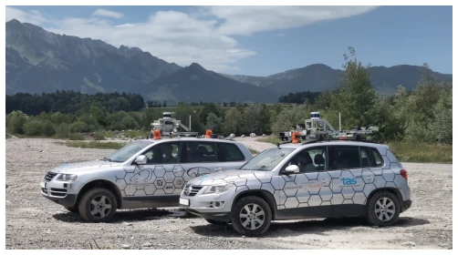
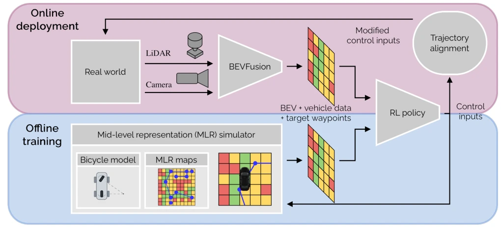
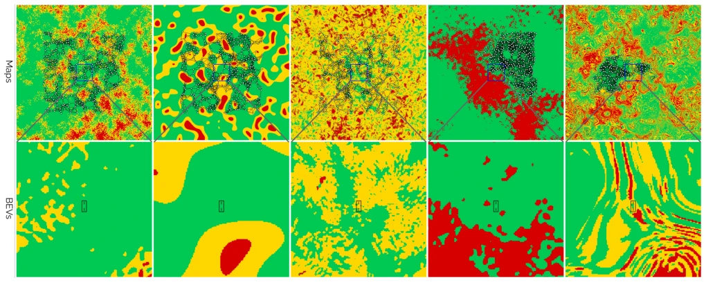
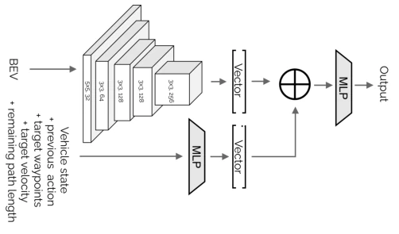
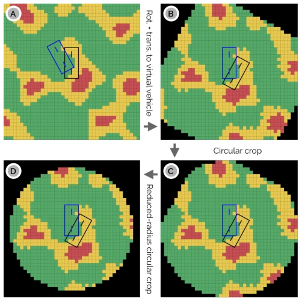
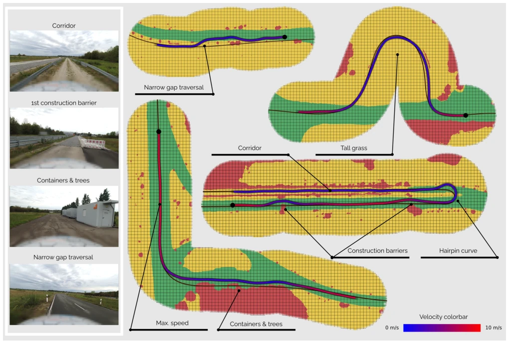
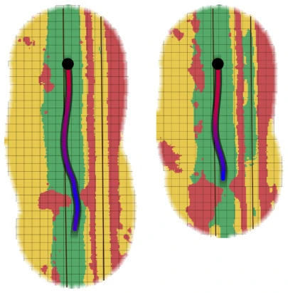
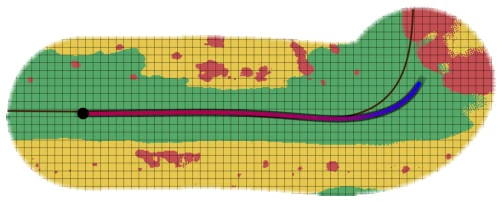

MILER: Semantic Mid-Level Representation for Sim-to-Real Reinforcement Learning in Unstructured Autonomous Driving
Thomas Steinecker, Denis Trescher, Alexander Bienemann, Thorsten Luettel, Mirko Maehlisch abspdf
论文点评Review
这篇论文试图用强化学习解决非结构化环境下的自动驾驶难题，核心套路是“抽象得越彻底，迁移越容易”。MILER 用语义中阶表示（MLR）把复杂的物理世界简化成网格地图，配合自行车模型，硬是把仿真和现实的鸿沟填平了。最爽的是零样本迁移，不用调参就能上真车，Jetson Orin 跑满 33.6 km/h 确实有点东西。但吐槽一下，这车开起来还是太“老实”了，过弯不甩尾，遇到障碍物不敢快，甚至下雨天就怂了（Vehicle B 直接停摆）。虽然作者吹嘘这是首个 30km/h 以上的 RL 无人车，但离人类司机的“老司机”风范还差得远，毕竟它连个漂亮的甩头动作都学不会。总的来说，工程上很实用，但智能上略显呆板。
This paper attempts to address autonomous driving challenges in unstructured environments using reinforcement learning, with the core strategy being "the more thorough the abstraction, the easier the transfer". MILER simplifies the complex physical world into a grid map using semantic mid-level representation (MLR), and combined with a bicycle model, it effectively bridges the gap between simulation and reality. The most impressive aspect is zero-shot transfer, allowing deployment on real vehicles without parameter tuning; achieving 33.6 km/h on Jetson Orin is indeed notable. However, a critique is that the vehicle drives too "conservatively"; it does not drift during turns, hesitates to speed up when encountering obstacles, and even stalls in rainy conditions (Vehicle B comes to a halt directly). Although the authors claim this is the first RL unmanned vehicle exceeding 30 km/h, it still falls far short of the "experienced driver" style of human drivers, as it cannot even learn a proper drifting maneuver. Overall, it is highly practical from an engineering perspective, but appears somewhat rigid in terms of intelligence.
Reinforcement learning (RL) holds immense potential in autonomous driving, but the cost of trial and error in the real world is prohibitively high, necessitating reliance on simulation. However, domain gaps in unstructured environments (such as off-road) are significant; high-fidelity simulators (e.g., CARLA [22]) entail high modeling costs and slow rendering. Existing works like TADPO [8] and WROOM [9] either suffer from low speed or depend on high-fidelity simulation. Sim2Seg [10], while utilizing semantic segmentation, still requires high-fidelity simulation. This paper aims to address the Sim-to-Real perception and control gap in unstructured scenarios, specifically focusing on enabling RL policies to be deployed directly on real vehicles without relying on real data fine-tuning. Existing methods often overlook dynamic differences, leading to instability at high speeds, or suffer from large perception domain discrepancies that cause policy failure.

Fig. 1. The two test vehicles (MuCAR-3, left; MuCAR-4, right) used for the real-world evaluation.
The overall workflow is divided into offline training and online deployment. During the training phase, a custom GPU-accelerated MLR simulator is used to generate semantic grid maps based on Perlin noise (traversable, semi-traversable, impassable, unknown), with vehicle states provided by a bicycle model. The policy network employs the PPO algorithm, taking BEV and vehicle states as input, and outputting jerk and steering rate changes, utilizing a discrete action head to smooth motion. During deployment, BEVFusion [6] converts camera and LiDAR data into semantic BEV consistent with the simulation. The key innovation lies in the trajectory alignment strategy: instead of directly applying policy actions to the real vehicle, a virtual vehicle is constructed; the policy controls the virtual vehicle, while the real vehicle minimizes pose differences with the virtual vehicle via longitudinal and lateral controllers (e.g., Stanley). Perception inputs undergo coordinate transformation and cropping to eliminate rotation/translation artifacts, ensuring consistency between training and deployment inputs. This decoupled dynamics approach effectively bridges the gap between simulation and reality, permitting the same policy to be deployed across different vehicles.

Fig. 2. Simplified overview of the data-flow pipeline during offline training and online deployment. During training, a mid-level representation (MLR) simulator generates BEVs from semantic grid maps and extracts the vehicle state from the bicycle model, both of which are fed into the RL policy network. During online deployment, LiDAR and camera streams are processed by BEVFusion [6] to generate semantic BEVs, which, together with the vehicle state measured by the vehicle sensors, are fed into the RL policy. Unlike in simulation, the actions are not applied directly to the real vehicle but are instead recalculated such that the real vehicle follows the simulated vehicle as closely as possible.

Fig. 3. Examples of synthetically generated maps and corresponding BEVs. The top row shows five example maps with their target-waypoint networks. The bottom row shows BEVs obtained at the centers of the maps, including bounding boxes representing typical vehicle dimensions. The maps measure 500 m × 500 m, and the BEVs measure 60 m × 60 m. Classes: Drivable ( ), Semi-drivable ( ), and Non-drivable ( ).

Fig. 4. The policy network architecture. The BEV is processed by a CNN and subsequently flattened. The vehicle state, previous actions, target waypoints, target velocity and remaining path length are processed by an MLP. All resulting vectors are concatenated and fed into a final MLP to produce the output.

Fig. 5. Transformation of the perception inputs of the real vehicle (black) and virtual vehicle (blue), illustrated using a simplified BEV of size 20 m × 20 m and exaggerated lateral and rotational offsets. (A) Original BEV produced by BEVFusion and centered on the real vehicle. (B) BEV transformed into the virtual-vehicle frame using nearest-neighbor cell assignment; cells outside the original BEV are assigned to the None class. (C) Circular cropping with radius 1
实验Experiments
在 3.0 km 测试赛道上，使用 MuCAR-3 和 MuCAR-4 两辆车进行了评估，总行驶 17.3 km，无需人工干预。最高速度达 33.6 km/h，无明显震荡。消融实验表明，BEV 语义差异是导致车辆间行为差异的主要原因，而直接应用控制指令会导致震荡。然而，实验也暴露了局限：Vehicle B 在雨天和暗光下因障碍物预测保守而停车；策略无法学习人类式的甩尾过弯，且受限于 BEV 范围，高速下制动距离不足。尽管在 Jetson Orin 上推理仅需 1.9 ms，但在复杂动态场景下的鲁棒性仍有提升空间。
Evaluation was conducted on a 3.0 km test track using two vehicles, MuCAR-3 and MuCAR-4, covering a total distance of 17.3 km without human intervention. The maximum speed reached 33.6 km/h with no obvious oscillation. Ablation studies indicate that BEV semantic discrepancies are the primary cause of behavioral differences between vehicles, whereas directly applying control commands results in oscillation. However, the experiments also exposed limitations: Vehicle B stopped in rainy and low-light conditions due to conservative obstacle prediction; the policy failed to learn human-style drifting maneuvers for turns, and constrained by the BEV range, braking distance was insufficient at high speeds. Although inference requires only 1.9 ms on Jetson Orin, robustness in complex dynamic scenarios still has room for improvement.

Fig. 6. Selected scenarios from the real-vehicle tests. The figure shows fused BEVs, the target waypoints (brown), the ego vehicle’s position with color-coded velocity, the start of each scenario (black dot), a grid with 2 m × 2 m cells and selected images from the scenarios on the left. For improved visibility, we reduced the BEV radius to 20 m. All BEVs are fused using the orientation of the first BEV, and newer BEVs overwrite older ones.

Fig. 7. A comparison of the second and third rounds of vehicle B. The second round is illustrated on the left, showing that the vehicle successfully navigated through the narrow gap. In the third round, vehicle B could no longer fit through the gap and stopped. Darker conditions and rainfall strongly contributed to the differences in the appearance of the BEVs over the course of the evaluation.

Fig. 8. Control ablation with vehicle B. The scenario shows how the vehicle failed to navigate the first curve of the track, driving toward an obstacle and stopping in front of it.